Impulsa el rendimiento de tu aserradero con sistemas de escaneo 2D y 3D de alta precisión.
LynxScan combina IA, inteligencia industrial y análisis de datos en tiempo real para detectar defectos, optimizar cortes y extraer el máximo valor de cada tronco o tabla.
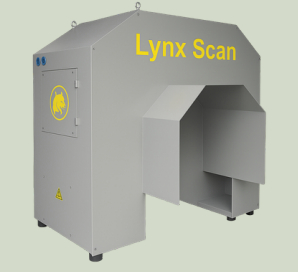
2D · 3D · IASistemas precisos y conectados que ayudan a aserraderos y procesadores de madera a mejorar la eficiencia y tomar mejores decisiones.
De principio a fin. Cada tronco y cada tabla con su historial completo.
Decisiones automatizadas que maximizan el rendimiento de cada línea.
Datos en tiempo real de cada tronco o tabla, desde patio hasta corte.
Menos desperdicio, más metros cúbicos aprovechados, mejor margen.
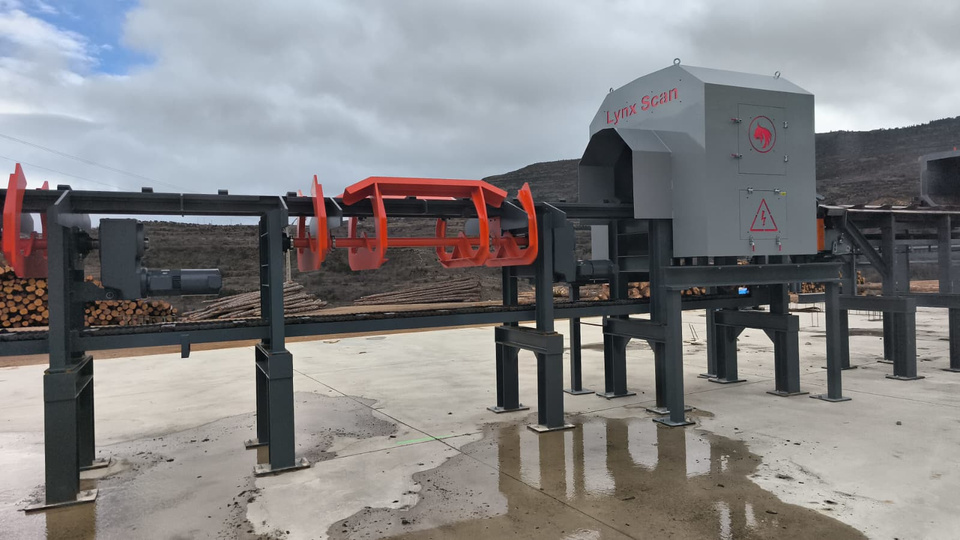
Soluciones de escaneo inteligente para optimizar el rendimiento, reducir desperdicios y mejorar el flujo de producción y la toma de decisiones.
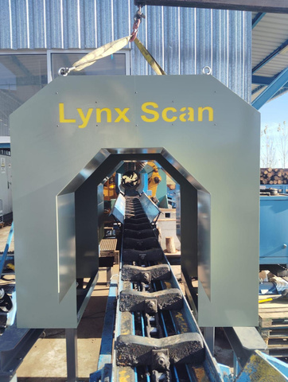
Detección avanzada de defectos y clasificación automatizada para CLT, LVL y líneas de procesamiento de madera estructural.
Tres equipos diseñados para cubrir todo el ciclo: cubicación, escaneo 3D inteligente y optimización de corte.
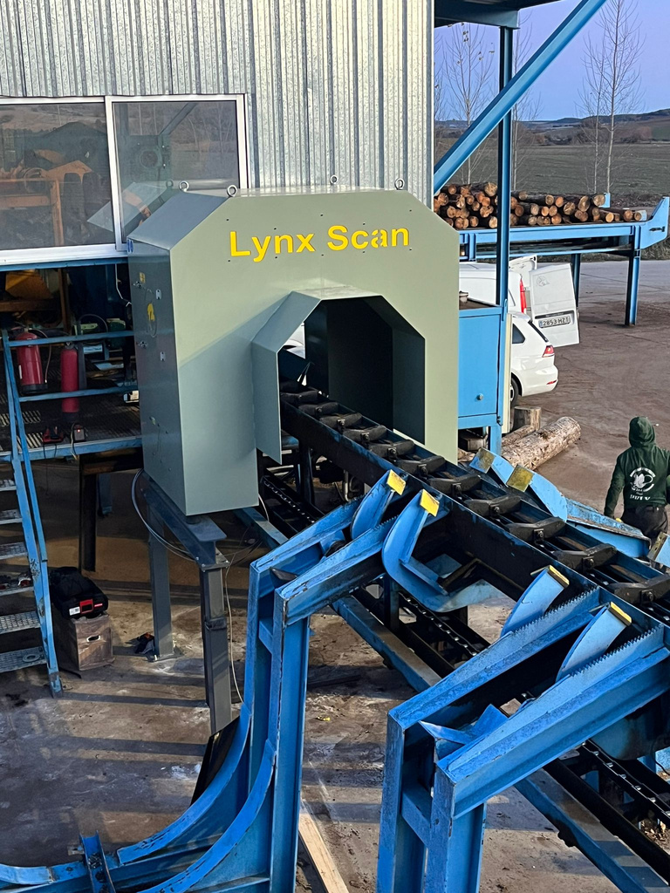
Una interfaz industrial robusta que procesa cada tronco, calcula la mejor estrategia de corte y la envía directamente a la maquinaria.
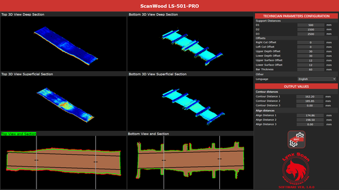
BotLynx exprime al máximo tu escáner LynxScan llevando toda la producción a un chat en vivo: consultas en lenguaje natural, alertas de línea inactiva e informe mensual PDF automático.
Pregúntale como hablas — respuesta en segundos. Tus datos no salen del aserradero: IA local, base de datos en sólo lectura, whitelist de usuarios.
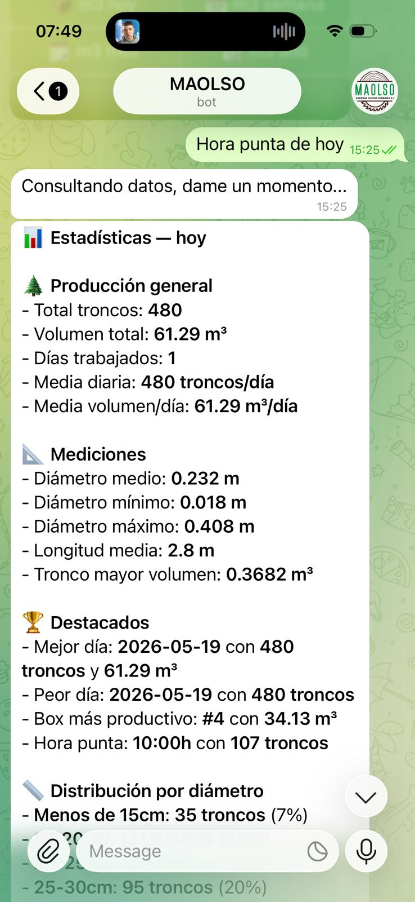
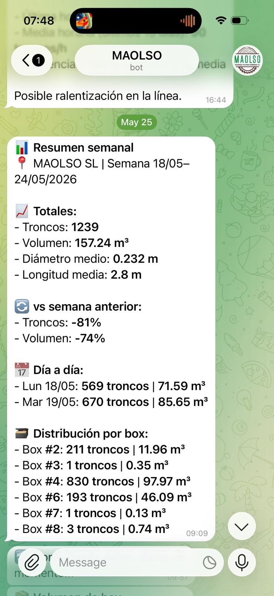
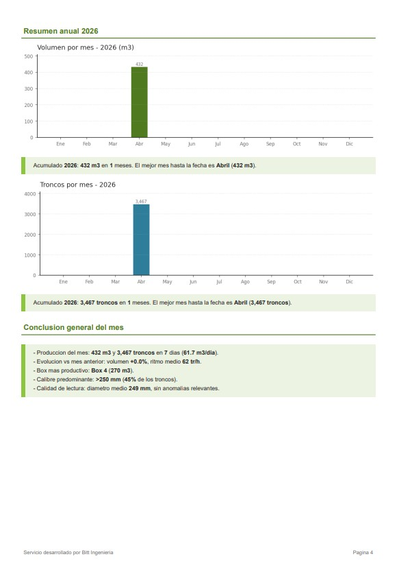
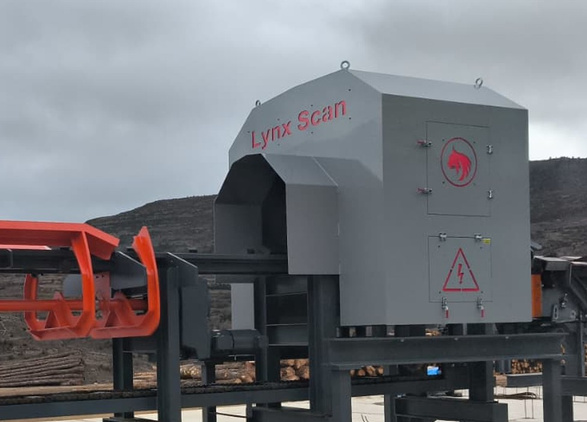
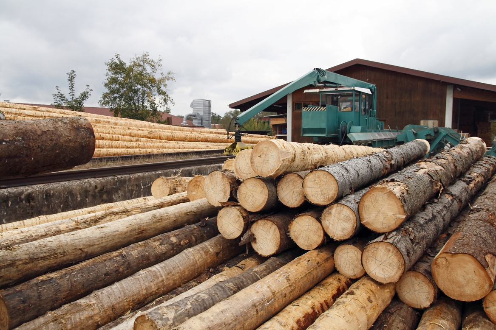
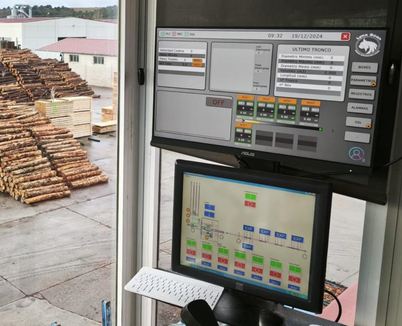
Cada tronco identificado desde el patio hasta el corte. Cada tabla con su historial.
La IA decide el corte óptimo y lo envía directo a la sierra. Sin intervención manual.
Diámetros, longitud, curvatura, conicidad. Todo medido y guardado en tiempo real.
Reduce mermas y aumenta el aprovechamiento del metro cúbico. Margen directo.
Cuéntanos cómo es tu línea y te mostramos qué equipo encaja. Visitas, demos y presupuestos sin compromiso.